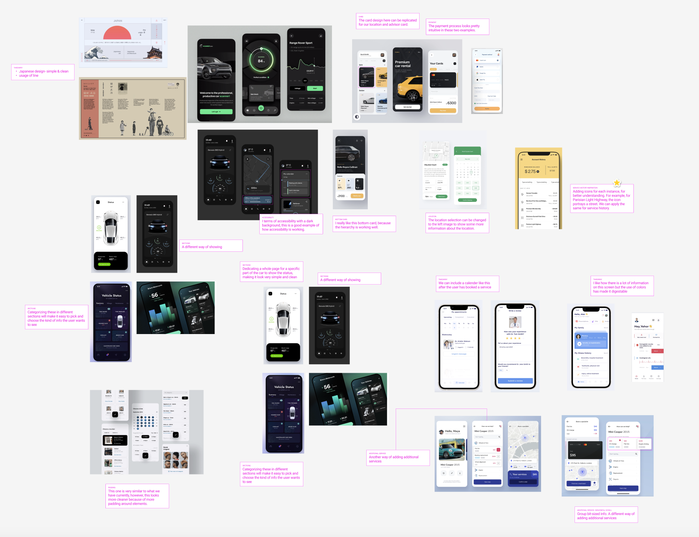

Project Overview
A senior design project focused on experience design. Our objective was to address a business problem by applying design principles to find a solution. Our direction involved enhancing the Mazda dealership vehicle maintenance product, with a focus on leveraging existing touchpoints to elevate the overall vehicle maintenance experience for Mazda owners. In this project, my main responsibilities revolved around crafting a unified design system using Figma and refining the user experience of the app.
Problem
50% of car dealership gross profits are from maintenance and repair services. However, according to Cox Automative maintenance and repair study 65% of vehicle owners do not get their vehicle serviced at a dealership due to a poor experience caused by: Percieved unfair pricing, Lack of transparency & Time cost & uncertainty.

Area of Intervention
After gathering feedback from numerous vehicle owners, we discovered that many of them preferred alternative service options like Jiffy Lube, Midas, or independent mechanics over dealerships. The prevailing perception was that dealerships were more costly and time-consuming, leading to a lack of trust in their services. To combat these misconceptions and increase the perceived value of dealership services, we decided to address the emerging needs of vehicle owners regarding transparency and uncertainty in the services provided. Our goal was to enhance the overall experience of Mazda owners throughout the entire service process, from the moment they arrive until the completion of the service.

Framing the Problem
In 2021, Mazda launched MyMazda, a mobile app enabling users to lock/unlock the car, adjust heating, and control fundamental vehicle features. Despite its functionality, the app had some limitations as users were redirected multiple times to various third-party sites for tasks such as booking service appointments, making payments, and getting service. Recognizing this opportunity for improvement, we aimed to integrate all touchpoints directly within the app. Our objective was to enhance transparency by providing users with clear information about the time and cost of the service, all within the seamless experience of the MyMazda app.

User Interface
One of my main responsibilities in the team was User Interface Design. My initial process was to find inspiration for different ways to add features we outlined to improve the app's user experience. My process included taking ideas from existing apps on my phone, Dribble and Pinterest. Once I had enough pictures, I created an outline incorporating those ideas into our user flow. Tyler and Sina then took over the visual design of the app.

Additionally, I took the lead in creating a cohesive design system for this project. It included leveraging my Figma skills and creating a simple system for the project with multiple components, variants and instances.

What Did I Learn?
1. Importance of Design Research: Throughout the project, I gained valuable experience in conducting thorough design research, delving into user preferences, pain points, and behaviors. This process allowed me to uncover insights that guided our design decisions and ensured that the MyMazda app catered to the specific needs and expectations of Mazda owners.
2. Collaboration: Working collaboratively with the team, I learned the importance of combining diverse perspectives and expertise to create holistic and innovative solutions. Embracing the ideology of adding value to the business, brand, and design, I ensured that our design choices aligned with the overarching goal of enhancing the user experience and increasing customer trust in dealership services.
3. Experience Design Foundation: This project served as a practical application of experience design principles. By focusing on transparency, user-friendliness, and seamless integration of touchpoints, I grasped the fundamental aspects of experience design and how it can positively impact user engagement and satisfaction in digital products like the MyMazda app.